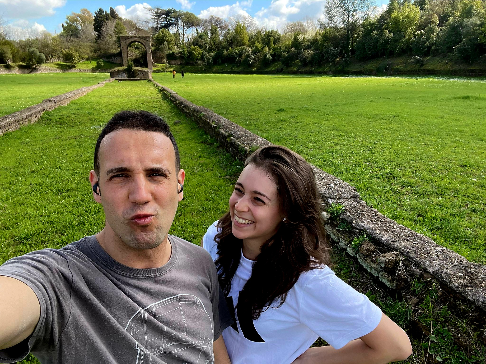

Mattia e Sara
Il nostro matrimonio
Data e Luogo della Cerimonia:
Data: 31 maggio 2025, ore 18.00 (spaccate!)
Luogo della Cerimonia: Basilica dei Santi Bonifacio e Alessio all'Aventino (P.za di Sant'Alessio, 23, 00153 Roma RM)
Il banchetto e i festeggiamenti:
Dove: Vecchio Borgo, Grottaferrata (Via Campi d'Annibale, 93, 00046 Grottaferrata RM)
Il Viaggio di Nozze:
Per il viaggio di nozze andremo in Africa, dal 5 al 23 agosto! 🌍🌞
- Le prime due notti saremo a Cape Town, al Pepperclub Hotel, dove esploreremo la costa in cerca di foche, pinguini e balene 🐧🐋.
- Le successive tre notti le passeremo a Livingston, in Zambia, all'Avani Victoria Falls Resort, dove faremo una crociera al tramonto sul fiume Zambesi 🌅🚤 e visiteremo le Cascate Vittoria. Inoltre, faremo un'escursione giornaliera nel Chobe National Park, in barca e 4x4 🚙, per ammirare gli incredibili paesaggi africani 🌳🌿.
- Poi, ci sposteremo verso il Kruger National Park, dove trascorreremo 3 notti al Karongwe River Lodge, facendo safari alla ricerca dei big five 🐘🦁🐆🦏🐃.
- Infine, andremo alle Seychelles, dove non vediamo l'ora di goderci il mare cristallino, la spiaggia paradisiaca e l'atmosfera tropicale 🌊🌴🏖️. Per 3 notti staremo all'isola di Mahe, al Constance Ephelia Seychelles, e poi ci sposteremo a La Digue, dove passeremo le ultime 4 notti al Le Nautique Luxury Waterfront Hotel. 🐢🐠
Se desiderate farci un regalo, il vostro contributo al nostro viaggio di nozze sarà il dono più bello! 💖
Il Nostro IBAN:
Se volete contribuire al nostro viaggio di nozze, ecco il nostro IBAN:
IBAN: IT65O0306905142100000062844